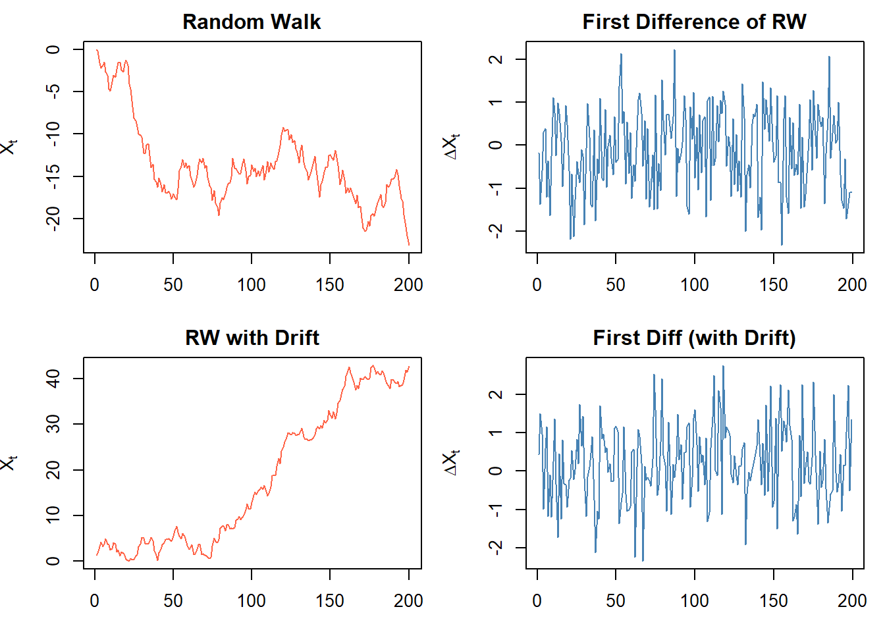
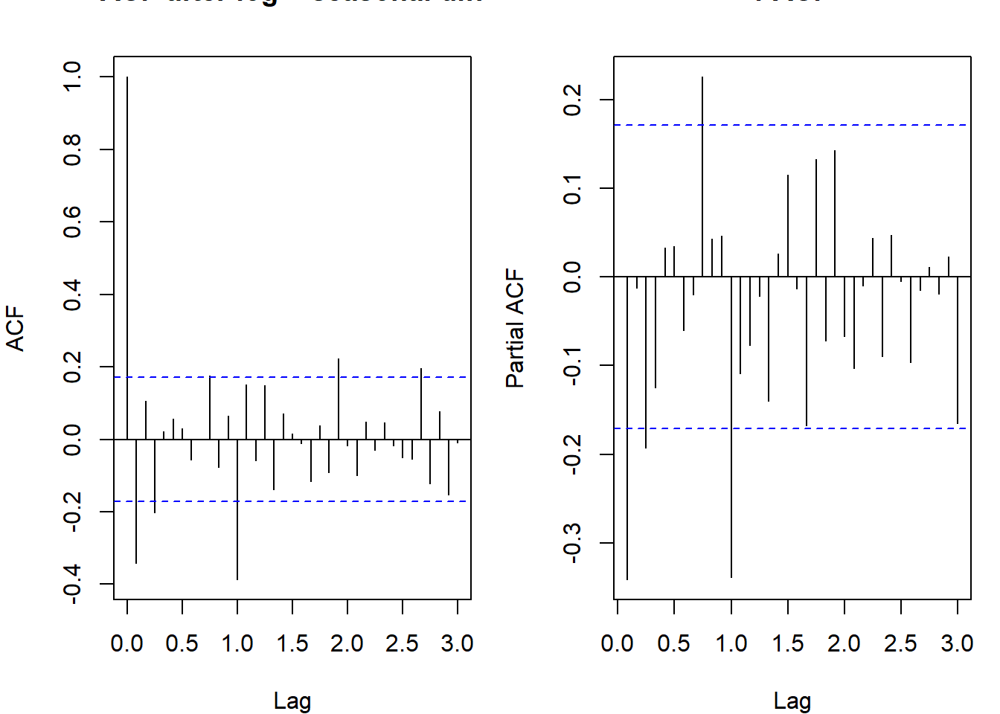
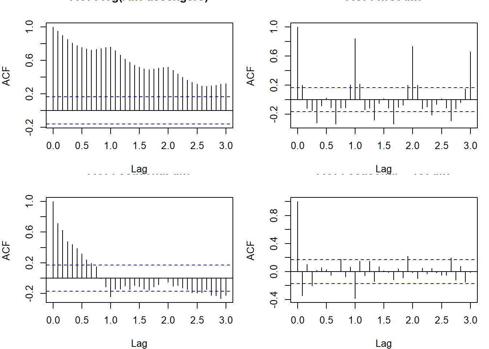
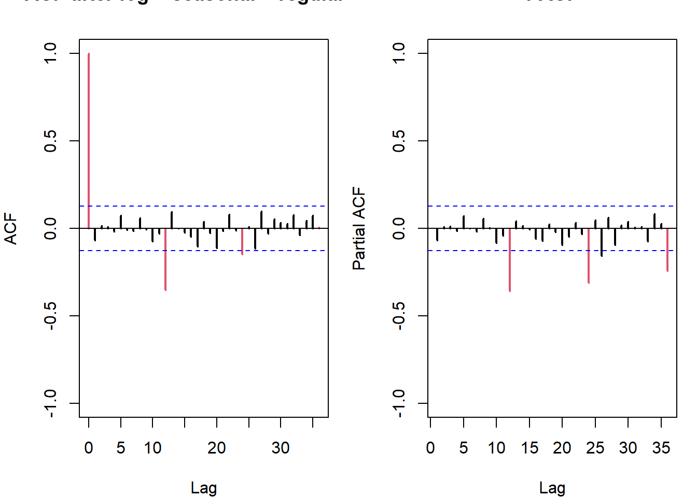
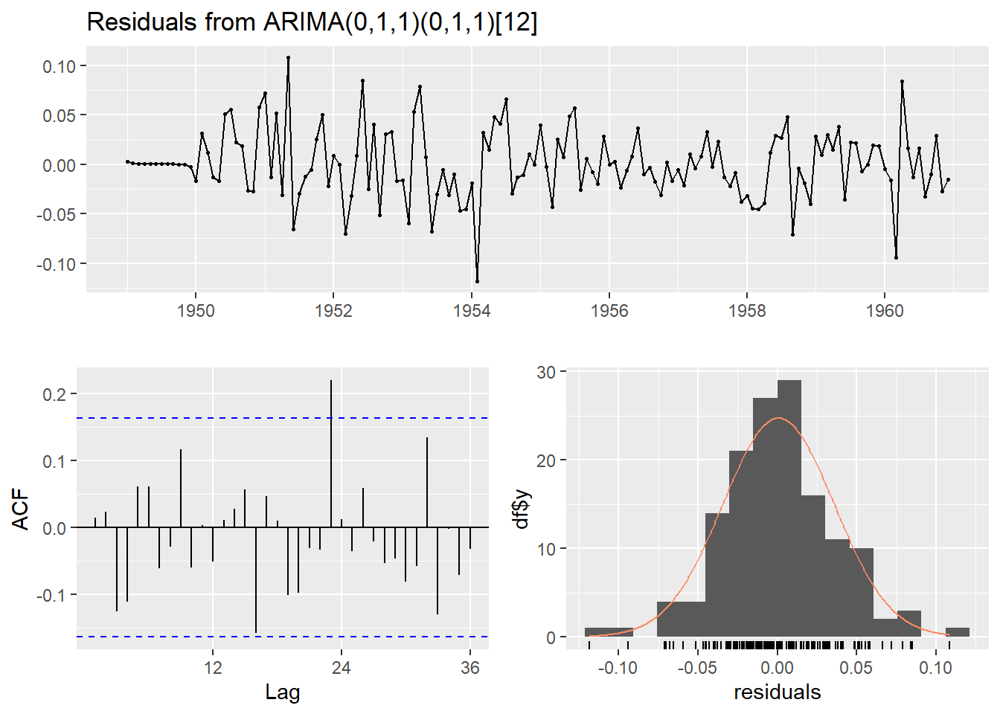

library(forecast) # Arima(), auto.arima(), forecast(), checkresiduals()
library(tseries) # adf.test(): quick unit root pre-screen before formal ADFARIMA
Non-stationarity, integration, ARIMA, and seasonal models
Non-Stationarity and Integration
An ARMA(p,q) model requires stationarity (all roots of \(\Phi_p(z)\) outside the unit circle). Many economic and financial series are not stationary: they have stochastic trends, meaning the mean or variance drifts over time. The solution is differencing.
A series is integrated of order \(d\), written \(X_t \sim I(d)\), if \((1-B)^d X_t\) is stationary and invertible, but \((1-B)^{d-1} X_t\) is not stationary.
- \(I(0)\): stationary, mean-reverting, short memory, transitory shocks
- \(I(1)\): needs one difference to become stationary; wanders widely, permanent shocks
- \(I(2)\): needs two differences; very persistent, common in price levels
Most economic and financial series are \(I(1)\).
Random Walk
The simplest \(I(1)\) process is the random walk:
\[X_t = X_{t-1} + Z_t \implies X_t = X_0 + \sum_{i=1}^{t} Z_i\]
This is an ARIMA(0,1,0). The characteristic polynomial of the AR part is \(\Phi(z) = 1 - z\), which has root \(z = 1\): exactly on the unit circle. Hence it is not stationary.
Properties: - \(E(X_t) = X_0\) (the mean is technically constant, but the trajectory drifts because the variance grows) - \(Var(X_t) = t\sigma_Z^2\), grows without bound - \(Cov(X_t, X_s) = \min(t,s) \cdot \sigma_Z^2\), depends on both \(t\) and \(s\), not just the lag
Shocks are permanent. A single innovation shifts the level of the series forever. Contrast with a stationary AR(1): a shock at time \(t\) has effect \(\phi^k\) at time \(t+k\), which decays to zero.
Random walk with drift: \(X_t = \delta + X_{t-1} + Z_t\), so \(X_t = X_0 + \delta t + \sum_{i=1}^t Z_i\). The drift \(\delta\) introduces a deterministic trend on top of the stochastic trend.

After first-differencing, both series look stationary: constant mean and variance.
Why the ACF Flags Non-Stationarity
For a random walk, \(\rho(k) = 1\) for all \(k\) in finite samples (the autocovariance is \(\min(t,s)\sigma_Z^2\), which does not depend only on the lag). In practice, the sample ACF of a random walk decays very slowly toward zero over many lags. This is the visual diagnostic for \(I(1)\) behavior.
For a stationary AR(1) with \(\phi = 0.99\), the ACF also decays slowly (like \(0.99^k\)), so it can be hard to visually distinguish a near-unit-root from an actual unit root. Formal tests (ADF) are needed.
ARIMA(p, d, q)
An ARIMA(p, d, q) model combines autoregressive, integration, and moving average components. The “I” stands for Integrated: the series is differenced \(d\) times before fitting an ARMA(p,q).
The general model is:
\[\Phi_p(B)(1-B)^d X_t = \mu + \Theta_q(B) Z_t, \qquad Z_t \sim WN(0, \sigma_Z^2)\]
where:
- \(\Phi_p(B) = 1 - \phi_1 B - \cdots - \phi_p B^p\) is the AR polynomial (all roots outside unit circle)
- \((1-B)^d\) introduces \(d\) roots exactly on the unit circle
- \(\Theta_q(B) = 1 + \theta_1 B + \cdots + \theta_q B^q\) is the MA polynomial (all roots outside unit circle for invertibility)
Equivalently: if \(W_t = (1-B)^d X_t\), then \(W_t \sim ARMA(p,q)\).
Special cases: - ARIMA(0,1,0): random walk (\(\Delta X_t = Z_t\)) - ARIMA(p,0,q): just ARMA(p,q) (no differencing needed) - ARIMA(0,1,1): exponential smoothing, since \(\Delta X_t = Z_t + \theta Z_{t-1}\) implies \(\tilde{X}_{t+1|t} = \lambda X_t + (1-\lambda)\tilde{X}_{t|t-1}\) with \(\lambda = 1 + \theta\)
Note on the constant: when \(d \geq 1\), including a constant \(\mu \neq 0\) in the ARIMA adds a deterministic trend of order \(d\) to the forecasts. For \(d = 1\), a nonzero constant gives a linear trend in forecasts (like a random walk with drift). For \(d = 2\), it gives a quadratic trend. Usually we set \(\mu = 0\) when \(d \geq 1\) unless there is a clear trend.
library(forecast)
data("AirPassengers")
lx <- log(AirPassengers)
mod <- Arima(lx, order = c(0, 1, 1),
seasonal = list(order = c(0, 1, 1), period = 12))
summary(mod)Series: lx
ARIMA(0,1,1)(0,1,1)[12]
Coefficients:
ma1 sma1
-0.4018 -0.5569
s.e. 0.0896 0.0731
sigma^2 = 0.001371: log likelihood = 244.7
AIC=-483.4 AICc=-483.21 BIC=-474.77
Training set error measures:
ME RMSE MAE MPE MAPE MASE
Training set 0.0005730622 0.03504883 0.02626034 0.01098898 0.4752815 0.2169522
ACF1
Training set 0.01443892Seasonal ARIMA (SARIMA)
Many real series have seasonality, i.e. regular patterns that repeat every \(s\) periods (\(s = 12\) for monthly, \(s = 4\) for quarterly). A purely seasonal unit root means \(X_t = X_{t-s} + \text{noise}\): the seasonal values are related by a random walk across years. This requires seasonal differencing \((1 - B^s)\).
A SARIMA(p,d,q)(P,D,Q)\(_s\) model handles both regular and seasonal dynamics:
\[\Phi_p(B) \Phi_P(B^s) (1-B)^d (1-B^s)^D X_t = \mu + \Theta_q(B) \Theta_Q(B^s) Z_t\]
where:
- \(\Phi_P(B^s) = 1 - \Phi_1 B^s - \cdots - \Phi_P B^{sP}\): seasonal AR polynomial
- \(\Theta_Q(B^s) = 1 + \Theta_1 B^s + \cdots + \Theta_Q B^{sQ}\): seasonal MA polynomial
- \((1-B^s)^D\): seasonal differencing (\(D\) times)
The airline model ARIMA\((0,1,1)(0,1,1)_{12}\) is the standard benchmark for monthly economic series:
\[(1-B)(1-B^{12}) X_t = (1+\theta_1 B)(1+\Theta_1 B^{12}) Z_t\]
It has only 2 parameters (\(\theta_1\) and \(\Theta_1\)) and fits a huge range of seasonal economic data well. To identify seasonal orders, look for spikes at multiples of \(s = 12\) in the ACF (seasonal MA terms) or PACF (seasonal AR terms), independently of the non-seasonal spikes at lags 1–4.
# after log + regular diff + seasonal diff, check ACF/PACF
w <- diff(diff(lx, 12))
par(mfrow = c(1, 2), mar = c(4, 4, 2, 1))
acf(w, main = "ACF after log + seasonal diff", lag.max = 36)
pacf(w, main = "PACF", lag.max = 36)
Spikes at lags 1 and 12 in the ACF suggest an MA(1) and seasonal MA(1), pointing to the airline model.
Identifying \(d\): Practical Rules
The number of differences \(d\) is determined before estimating \(p\) and \(q\). Rules of thumb:
- Plot the series: does it wander (non-stationary) or fluctuate around a fixed mean (stationary)?
- Plot the ACF: slow decay (ACF stays large for many lags) suggests \(d \geq 1\). After correct differencing, the ACF should decay quickly.
- Formal unit root test: ADF test (covered in the regression chapter). Fail to reject \(\Rightarrow\) difference once more.
- Do not over-difference: if the ACF of \(\Delta X_t\) has \(\rho(1) \approx -0.5\), the series may have been over-differenced. \(Var(\Delta^d X_t)\) increases when you over-difference.
- Variance comparison: compute
var()of \(X_t\), \(\Delta X_t\), \(\Delta^2 X_t\). The correctly differenced series has the smallest variance; variance rising again is a sign of over-differencing.

The log series has a slowly decaying ACF (non-stationary). After seasonal + regular differencing, the ACF decays quickly: the series is now \(I(0)\).
Box-Jenkins Methodology
The Box-Jenkins approach is the standard workflow for ARIMA model building:
Identification: apply transformations (log, Box-Cox) if needed to stabilize variance. Determine \(d\) and \(D\) via plots and unit root tests. Examine ACF/PACF of the stationary series to suggest candidate \(p, q, P, Q\).
Estimation: fit the candidate model(s) by maximum likelihood. Compare with AIC/BIC.
Validation (diagnostic checking): examine residuals. They should look like white noise: no significant ACF, approximately normal, constant variance. If any check fails, revise the model.
Forecasting: use the validated model to produce point forecasts and prediction intervals.
The process is iterative: if validation fails, go back to step 1 or 2.
Real-Data Example: APB Barcelona Port Traffic
The APB dataset (monthly port cargo tonnage, Barcelona, 1997–2025) illustrates the full Box-Jenkins workflow on a real economic series.
Step 1 – Transformation and identification. The series shows a mean–variance relationship (variance grows with the level), so a log transformation is applied first. A plot of means vs. variances by year confirms the relationship is approximately linear, motivating \(\log\).
After logging, there is a clear annual seasonal pattern (\(s = 12\)) plus a long-run stochastic trend. We apply seasonal differencing \((1-B^{12})\) first, then regular differencing \((1-B)\) if the ACF of \((1-B^{12})\log X_t\) still decays slowly.
Var(log series): 0.04813 Var after seasonal diff: 0.00746 Var after regular diff: 0.00161 Variance drops sharply with each differencing step. A further regular difference raises variance again (over-differencing), so \(d = 1\), \(D = 1\) is confirmed.
Step 2 – Model identification from ACF/PACF. After applying \(\log\), \((1-B^{12})\), \((1-B)\):

A spike at lag 1 in the ACF and lag 12 in the ACF suggest an MA(1) regular and seasonal MA(1) term. This leads to the airline model ARIMA\((0,1,1)(0,1,1)_{12}\) as the primary candidate.
Step 3 – Estimation. Fit the candidate models with forecast::Arima(). For seasonal models, pass seasonal = list(order = c(P, D, Q), period = 12):
# fit airline model on the simulated APB-like series
lnsim_ts <- ts(lnsim, start = 1997, frequency = 12)
mod_apb <- Arima(lnsim_ts, order = c(0, 1, 1),
seasonal = list(order = c(0, 1, 1), period = 12))
cat("AIC:", round(AIC(mod_apb), 2), " BIC:", round(BIC(mod_apb), 2), "\n")AIC: -971.32 BIC: -960.89 cat("theta_1:", round(coef(mod_apb)["ma1"], 4),
" Theta_1:", round(coef(mod_apb)["sma1"], 4), "\n")theta_1: -0.0345 Theta_1: -1 Variance reduction as a model selection criterion. Before fitting, compare the sample variance of the differenced series at each step. The correctly differenced series minimises variance without over-differencing. Use base::var():
Transformation Variance
1 log X_t 0.048132
2 (1-B^12)log X_t 0.007458
3 (1-B)(1-B^12)log X_t 0.001608
4 (1-B)^2(1-B^12)log X_t 0.003447The variance rises at the last step (over-differencing), confirming \(d = 1\), \(D = 1\).
library(tseries)
# Step 1: unit root test on levels and first differences
adf.test(lx) # fails to reject (non-stationary)
Augmented Dickey-Fuller Test
data: lx
Dickey-Fuller = -6.4215, Lag order = 5, p-value = 0.01
alternative hypothesis: stationaryadf.test(diff(lx)) # likely rejects after one diff
Augmented Dickey-Fuller Test
data: diff(lx)
Dickey-Fuller = -6.4313, Lag order = 5, p-value = 0.01
alternative hypothesis: stationary# Step 2: fit candidate models
mod1 <- Arima(lx, order = c(1, 1, 1),
seasonal = list(order = c(0, 1, 1), period = 12))
mod2 <- Arima(lx, order = c(0, 1, 1),
seasonal = list(order = c(0, 1, 1), period = 12))
cat("AIC mod1:", round(AIC(mod1), 2), "\n")AIC mod1: -481.9 cat("AIC mod2:", round(AIC(mod2), 2), "\n")AIC mod2: -483.4 # Step 3: validate
checkresiduals(mod2)
Ljung-Box test
data: Residuals from ARIMA(0,1,1)(0,1,1)[12]
Q* = 26.446, df = 22, p-value = 0.233
Model df: 2. Total lags used: 24# auto.arima searches over (p,d,q)(P,D,Q) combinations
best_mod <- auto.arima(lx, seasonal = TRUE, stepwise = FALSE, approximation = FALSE)
summary(best_mod)Series: lx
ARIMA(0,1,1)(0,1,1)[12]
Coefficients:
ma1 sma1
-0.4018 -0.5569
s.e. 0.0896 0.0731
sigma^2 = 0.001371: log likelihood = 244.7
AIC=-483.4 AICc=-483.21 BIC=-474.77
Training set error measures:
ME RMSE MAE MPE MAPE MASE
Training set 0.0005730622 0.03504883 0.02626034 0.01098898 0.4752815 0.2169522
ACF1
Training set 0.01443892Note on auto.arima: it uses a stepwise search with AICc (corrected AIC for small samples) by default. Setting stepwise = FALSE and approximation = FALSE does a more exhaustive search but is slower. For a final model, it’s worth the extra time.
Appendix: Key Functions
diff() – Differencing
base::diff(x, lag = 1) computes \((1-B)X_t\). For seasonal differencing, diff(x, lag = s) computes \((1-B^s)X_t\). Chain them: diff(diff(x, 12)) gives \((1-B)(1-B^{12})X_t\).
data("AirPassengers")
lx <- log(AirPassengers)
d12lx <- diff(lx, 12) # seasonal diff
d1d12lx <- diff(d12lx, 1) # then regular diff
cat("Var(log):", round(var(lx), 5),
" Var(seasonal diff):", round(var(d12lx), 5),
" Var(both diffs):", round(var(d1d12lx), 5), "\n")Var(log): 0.19488 Var(seasonal diff): 0.0038 Var(both diffs): 0.0021 Arima() – Fitting ARIMA/SARIMA
forecast::Arima(x, order = c(p, d, q), seasonal = list(order = c(P, D, Q), period = s)) fits the model by exact MLE. Key arguments:
include.mean: include a constant (automatically FALSE whend >= 1)method:"ML"(default, exact MLE) or"CSS"(conditional sum of squares, faster)
data("AirPassengers")
lx <- log(AirPassengers)
mod <- Arima(lx, order = c(0, 1, 1),
seasonal = list(order = c(0, 1, 1), period = 12))
summary(mod)Series: lx
ARIMA(0,1,1)(0,1,1)[12]
Coefficients:
ma1 sma1
-0.4018 -0.5569
s.e. 0.0896 0.0731
sigma^2 = 0.001371: log likelihood = 244.7
AIC=-483.4 AICc=-483.21 BIC=-474.77
Training set error measures:
ME RMSE MAE MPE MAPE MASE
Training set 0.0005730622 0.03504883 0.02626034 0.01098898 0.4752815 0.2169522
ACF1
Training set 0.01443892auto.arima() – Automatic Order Selection
Searches over a grid of \((p, d, q)(P, D, Q)_s\) using AICc. stepwise = FALSE and approximation = FALSE give the most thorough (but slower) search.
best <- auto.arima(lx, seasonal = TRUE, stepwise = FALSE, approximation = FALSE)summary(best)Series: lx
ARIMA(0,1,1)(0,1,1)[12]
Coefficients:
ma1 sma1
-0.4018 -0.5569
s.e. 0.0896 0.0731
sigma^2 = 0.001371: log likelihood = 244.7
AIC=-483.4 AICc=-483.21 BIC=-474.77
Training set error measures:
ME RMSE MAE MPE MAPE MASE
Training set 0.0005730622 0.03504883 0.02626034 0.01098898 0.4752815 0.2169522
ACF1
Training set 0.01443892adf.test() vs ur.df() – Unit Root Tests
tseries::adf.test(x) is the quickest way to pre-screen for a unit root. For full control over deterministic terms and lag selection, use urca::ur.df() (covered in the regression notes).
data("AirPassengers")
lx <- log(AirPassengers)
tseries::adf.test(lx) # fail to reject: non-stationary
Augmented Dickey-Fuller Test
data: lx
Dickey-Fuller = -6.4215, Lag order = 5, p-value = 0.01
alternative hypothesis: stationarytseries::adf.test(diff(lx, 12)) # likely still non-stationary (needs regular diff too)
Augmented Dickey-Fuller Test
data: diff(lx, 12)
Dickey-Fuller = -3.1899, Lag order = 5, p-value = 0.09265
alternative hypothesis: stationarytseries::adf.test(diff(diff(lx, 12))) # should reject: stationary
Augmented Dickey-Fuller Test
data: diff(diff(lx, 12))
Dickey-Fuller = -5.1993, Lag order = 5, p-value = 0.01
alternative hypothesis: stationary